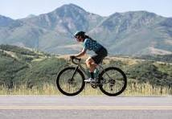

"When I'm not helping teams be productive while maintaing a healthy work-life balance, I'm doing the following things"
Cycling
"I been cycling in different location around the world, with different group of people ,specially in jordan valley,Europe, and south America."
"The most exciting part of cycling it was meeting different pepole in each region I visited and learing about there life style and different background."
cycling give me a mind release and stress release and a nice a body workout that I enjoy while I 'm doing it ,it did help me alot with my health and my life style it kept me feeling young and refresh each time I am cycling.'
Photography
"Photographing mean the world to me becuse I can see the world from differnet eyes of the camera with different angle,and enjoying it at the that moment or at different time."
"I travel and go to different places to take different photos of what Isee with my eyes and what camera see and after that when i get back home and visit my friends i will show them what i saw and what exprices."
soccer

"soccer is one of my favorite sport to play of all time and to watch at the same time too,been obsessed with it since I was seven years old."
"I traveled to Doha to watch the world cup and it was great experience,it was the whole world was gather in one city under one sport from different ethnic different background different culture. "
"I been going to the soccer field with few of my friends and playing on weekely bases and i enjoy the out door and breathing the fresh air"
"one day i would like to go to south America and play in the field down there with some big names in the sport but you never know"